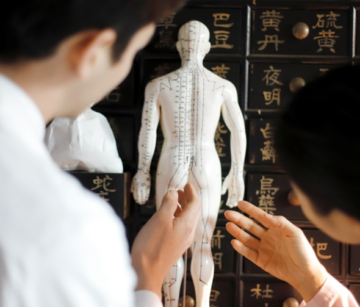

バランスの取れた免疫システムに作られる
免疫補薬クリニックとは?

01
免疫細胞の活性化及び全身健康の治療
正常的な免疫バランスは身体機能のバランスから始まります。各器官の機能が正常的に動いている時に最もバランスが取れた免疫システムが作動します。
廣東の免疫強化プログラムは免疫細胞を活性するために直接に治療し、免疫機能にかかわる補助器官や全身健康まで考える 治療です。

韓方・西洋医学の治療
02
免疫力を高めるための韓方・西洋医学の治療
患者別に免疫力の状態、基礎疾患、体力などの全てが異なりますので廣東病院は細かい検診を通じて患者に合わせて 韓方・ 西洋医学の治療プログラムを適用します。
‘免疫細胞の活性化’だけでなくバランスが
取れた免疫体系で作られるのが「免疫力の強化」です。